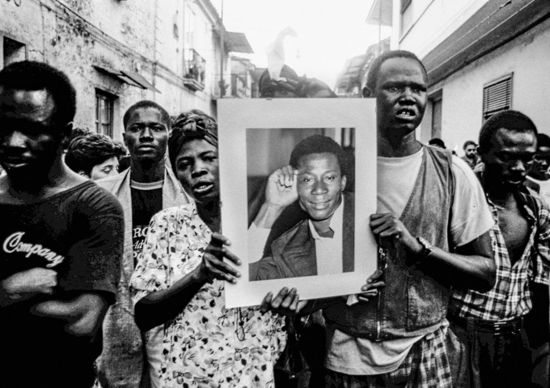

Chi era Jerry Essan Masslo
Rifugiato sudafricano, attivista e simbolo universale della lotta al caporalato, al razzismo e alla difesa dei diritti dei lavoratori.
La Fuga dall'Apartheid in Sudafrica
Jerry Essan Masslo nasce a Umtata, in Sudafrica, nel 1959. Cresce sotto il brutale regime di segregazione razziale dell'Apartheid, partecipando attivamente alle proteste per la libertà e l'uguaglianza dei diritti per la popolazione nera.
La sua vita viene segnata da gravi lutti familiari: il padre viene ucciso durante i disordini politici, e nel 1987 la sua figlioletta di appena sette anni perde la vita colpita da un proiettile vagante durante una manifestazione a Soweto. A causa delle continue persecuzioni e del pericolo di vita, Masslo è costretto a fuggire dal Paese imbarcandosi come clandestino insieme al fratello su una nave cargo.
Durante la navigazione il fratello si ammala: giunti al porto di Port Harcourt, Jerry scende a terra per cercare farmaci ma la nave riparte prima che lui possa risalire, facendogli perdere per sempre le tracce del fratello. Successivamente, vendendo l'unico bene prezioso che gli era rimasto, il bracciale d'oro del padre, Jerry riesce ad acquistare un biglietto aereo per Roma.
L'Arrivo in Italia e la Denuncia dello Sfruttamento
Nel marzo del 1988 Jerry Masslo giunge a Roma ed esprime la volontà di richiedere asilo politico e riceve il sostegno dell’UNHCR e di Amnesty International. La sua richiesta viene però respinta a causa della cosiddetta clausola geografica, prevista dalla Convenzione di Ginevra, che riconosceva lo status di rifugiato unicamente ai cittadini provenienti dall'Europa orientale. Grazie all'intervento di Amnesty International, il 3 maggio 1988 viene accolto presso La Tenda di Abramo, una struttura della Comunità di Sant'Egidio a Roma.
Nell’estate del 1988, dopo aver saputo della possibilità di lavorare nella raccolta del pomodoro, Jerry si trasferisce a Villa Literno, in provincia di Caserta. Qui trova lavoro come bracciante agricolo, insieme a migliaia di altri immigrati, in condizioni estremamente dure, con salari bassissimi e senza tutele. Al termine della stagione, torna a Roma e racconta le gravi condizioni di vita degli immigrati: molti vivevano in baraccopoli, casolari abbandonati o persino in loculi del cimitero in costruzione, senza acqua né elettricità.
Nel frattempo, Jerry aveva richiesto un visto per il Canada, dove sperava di ricongiungersi con la moglie e gli altri figli ma, a causa dei lunghi tempi burocratici, nell’estate successiva tornò a Villa Literno per la stagione della raccolta.
In quel periodo, a Villa Literno aumentarono gli episodi di razzismo e violenza contro i braccianti africani. Alcuni gruppi di giovani locali organizzavano aggressioni e intimidazioni per allontanare gli immigrati dal centro abitato.
La situazione iniziò ad attirare l'attenzione dei media. Una troupe del TG2 realizzò un servizio sulle condizioni di sfruttamento dei lavoratori agricoli, intervistando anche Jerry il quale denunciò pubblicamente il razzismo, le discriminazioni e le violenze quotidiane subite dagli immigrati.
«Pensavo di trovare in Italia un rifugio, un posto in pace, e invece ho trovato violenza e discriminazione... Non siamo animali, siamo esseri umani che cercano solo di lavorare con dignità.»
Il Tragico Omicidio
Nella notte tra il 24 e il 25 agosto 1989, quattro giovani criminali locali, armati e incappucciati, fecero irruzione nel casolare di via Gallinelle, a Villa Literno, dove Jerry Masslo dormiva insieme ad altri 28 lavoratori immigrati. Il loro obiettivo era rapinare i braccianti dei risparmi guadagnati dopo mesi di duro lavoro nelle campagne.
I rapinatori minacciarono i presenti con pistole e spranghe di ferro, intimando loro di consegnare tutto il denaro. Durante l'aggressione, alcuni braccianti furono picchiati e altri si rifiutarono di cedere i propri risparmi. La situazione degenerò rapidamente e i criminali esplosero diversi colpi di pistola, ferendo tre persone, tra cui Jerry e Kirago Antony Yrugo.
Jerry cercò di opporsi alla violenza e di difendere i propri compagni, ma fu raggiunto da un colpo di pistola e morì prima dell'arrivo dei soccorsi.
La morte di Jerry Masslo scosse profondamente l'opinione pubblica italiana e rappresentò un momento decisivo per la presa di coscienza politica e sociale sulle condizioni dei lavoratori immigrati. La sua vicenda contribuì ad aprire una nuova stagione di attenzione verso i diritti delle persone straniere e alla necessità di regolamentarne la presenza e le condizioni di vita e di lavoro in Italia, seppur tra luci e ombre.
Per il suo omicidio furono arrestati e condannati quattro giovani di Villa Literno: un contadino, un meccanico, il garzone di un barbiere e un minorenne. La sua morte divenne un simbolo della lotta contro il razzismo, lo sfruttamento e le discriminazioni, lasciando un segno profondo nella storia dell'immigrazione in Italia.

Le conseguenze della morte di Jerry Masslo: una svolta nella storia italiana
La morte di Jerry Essan Masslo provocò una profonda reazione nell'opinione pubblica e nelle istituzioni italiane. I suoi funerali, celebrati a Villa Literno alla presenza di numerose autorità istituzionali e trasmessi dalla RAI, assunsero il carattere di un vero e proprio funerale di Stato. Da quella tragedia nacquero importanti mobilitazioni e cambiamenti:
- Il primo sciopero dei braccianti immigrati: Il 20 settembre 1989, a Villa Literno, i lavoratori stranieri incrociarono per la prima volta le braccia in una protesta organizzata autonomamente, chiedendo condizioni di lavoro dignitose, contratti regolari e la fine del caporalato.
- La grande manifestazione antirazzista di Roma: Il 7 ottobre 1989, oltre 200.000 persone scesero in piazza a Roma per partecipare alla prima grande manifestazione nazionale contro il razzismo, chiedendo uguaglianza, diritti e rispetto per le persone immigrate.
- La Legge Martelli (Legge n. 39/1990): Il 28 febbraio 1990 venne approvata la cosiddetta Legge Martelli, che introdusse una prima disciplina organica, seppur ancora parziale, dell'immigrazione in Italia. Tra le principali novità vi furono l'abolizione della riserva geografica per il riconoscimento dello status di rifugiato, nuove disposizioni sull'ingresso e il soggiorno degli stranieri e la possibilità di regolarizzare molti cittadini stranieri già presenti in Italia.
Il sacrificio di Jerry Essan Masslo rappresenta ancora oggi la matrice etica dell'Associazione a lui intitolata a Castel Volturno, impegnata quotidianamente per la tutela della salute, dei diritti e della dignità di ogni persona.